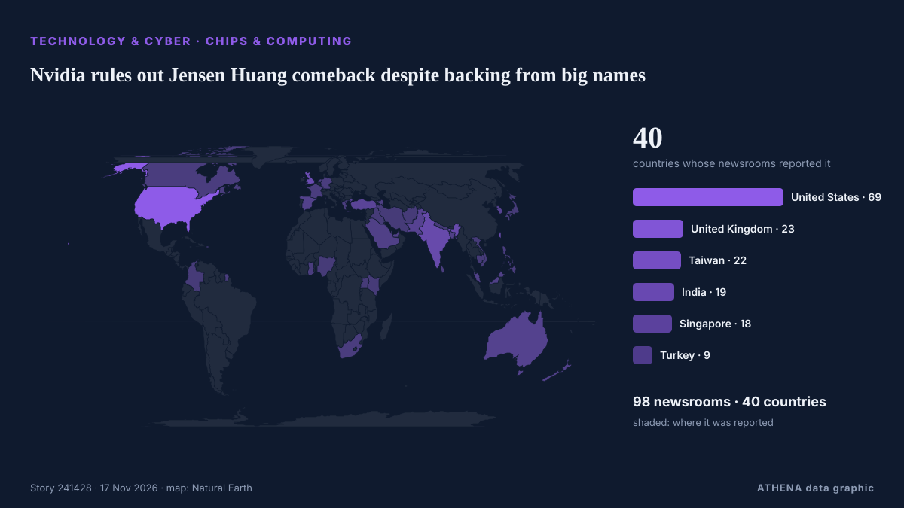

Technologie, IA et cybersécurité
SponsoriséPrésenté par  Cybernetics and Artificial Intelligence Lab Welcome to the Cybernetics and Artificial Intelligence Laboratory, established at the Department of Business Administration of the National and Kapodistrian University of Athens. The lab is headed by Professor Dimitrios Thomakos. The lab aims to do research that can be published in top venues. Our research uses tools and methods of Artificial Intelligence, and lies in the following areas: - Forecasting - Decision making - Cyber security - Finance We are always looking forward to collaborating with exceptional students!
Cybernetics and Artificial Intelligence Lab Welcome to the Cybernetics and Artificial Intelligence Laboratory, established at the Department of Business Administration of the National and Kapodistrian University of Athens. The lab is headed by Professor Dimitrios Thomakos. The lab aims to do research that can be published in top venues. Our research uses tools and methods of Artificial Intelligence, and lies in the following areas: - Forecasting - Decision making - Cyber security - Finance We are always looking forward to collaborating with exceptional students!
Les titres sont affichés en anglais, tels que publiés.

Puces et calculNvidia rules out Jensen Huang comeback despite backing from big names
Nvidia is not considering reinstating the scandal-hit Jensen Huang as chief executive, despite a growing campaign for his return. de ABC News Australia
| 4 nov. | 99 |
|---|---|
| 5 nov. | 112 |
| 6 nov. | 54 |
| 7 nov. | 37 |
| 8 nov. | 42 |
| 9 nov. | 103 |
| 10 nov. | 114 |
| 11 nov. | 83 |
| 12 nov. | 75 |
| 13 nov. | 87 |
| 14 nov. | 38 |
| 15 nov. | 42 |
| 16 nov. | 73 |
| 17 nov. | 3 |
Ruling party leader says will push for 10-year exam ban for AI-assisted cheating
SEOUL, Nov. 17 (Yonhap) -- The leader of the ruling Democratic Party (DP) said T... de Yonhap (English)
US judge tosses new visa rules for Nigerians, other foreign students, journalists
A US federal judge on Monday struck down a Trump administration policy that would impose stricter limits on how long foreign students and journalists can study or work in the United States. de Vanguard
NASA's interstellar Voyager 1 probe is about to reach 1 light-day from Earth after nearly 50 years in space
Voyager 1 is celebrating a big milestone as it approaches its 50th birthday: reaching one light-day away from Earth. de Space.com
Panamanian authorities investigate bombing attack on investigative reporter’s home
Panamanian authorities are probing a bombing at the home of investigative journalist Rolando Rodríguez that caused property damage but no injuries. de Arab News
Europe hunts for Palantir alternatives as militaries seek to limit US dependence
Last week, Germany’s Helsing unveiled military intelligence software called Clarity. de The Business Standard (Bangladesh) (working feed)
A Collage Showing 49 Drill Holes Made by NASA’s Curiosity Mars Rover
Description This collage shows 49 drill holes captured by NASA’s Curiosity Mars rover as of November 2026. de NASA news releases
‘I am not guilty’: Russell Brand statement read by wife
Authorities are investigating Brand over a message from prison, read publicly by his wife, in which he declared his innocence. de Sydney Morning Herald
ULA Vulcan rocket failure destroys 40 Amazon Leo satellites
United Launch Alliance is known for its ultra-dependable Atlas V, but its its latest rocket is off to a shaky start. de Engadget
UN chief urges countries to rein in 'merciless' killer robots
Geneva, Switzerland: The United Nations chief called on countries Monday to impose binding rules on the use of "merciless" lethal autonomous weapons systems, often dubbed "killer r... de Oman Observer
Amazon Sells Data Centers to Blackstone in $5 Billion Deal
Blackstone’s data center acquisition vehicle has reportedly acquired a majority interest in two joint ventures with Amazon Web Services (AWS) in a $5 billion deal. de PYMNTS
Zelensky urges US and Musk to lift Starlink restrictions and be on 'right side of history'
The Ukrainian president says the slowed-down internet is making it difficult to stop Russian attacks. de BBC News
AI cheating sparks alarm ahead of South Korea's college exam
A South Korean exam cheat who confessed to using AI to post near-perfect accountancy test scores has sent teachers and officials scrambling to prevent similar misconduct ahead of this week’s crucial… de New Straits Times
Russia hopes to reduce its isolation by getting posts at UN telecoms agency
Moscow hopes to secure two senior roles at the International Telecommunication Union. de The Straits Times
More than 175,000 names back a call to reinstate Jensen Huang at Nvidia
An open letter asking Nvidia’s board to bring back Jensen Huang had more than 175,000 names on Monday, four days after he resigned as chief executive. de The Next Web
Musk, Uber co-founder join call for Jensen Huang's return to Nvidia
They are among 158,000 signatories of an open letter urging the board to reinstate Jensen Huang while an independent investigation establishes the facts. de Free Malaysia Today
Inside China's drive to build an AI-native generation
By 2030, Beijing wants AI literacy to be universal among schoolchildren. de The Business Standard (Bangladesh) (working feed)
Estonia prepares cloud-based digital government to keep public services running in case of occupation
Estonia is developing technological infrastructure that will allow the government to keep digital public services running even if the country is occupied or its data centres are destroyed. de Ukrainska Pravda (English)
Elon Musk signs petition to reinstate Jensen Huang as Nvidia CEO
An online petition with over 91,000 signatures is calling for the reinstatement of Nvidia's disgraced former CEO. de Tom's Hardware
Megaspeed investigates Alice Huang links as Jensen Huang faces Congress
Singapore-based Megaspeed has launched an internal investigation after reports linked its former executive Alice Huang to Nvidia’s former chief executive, Jensen Huang, and to allegations that she… de Gulf News
Democratic US senators order Elon Musk to preserve records on Ukraine Starlink access
Democratic US senators have told Elon Musk to preserve all records related to his company SpaceX's restrictions on Ukraine's use of its Starlink and Starshield satellite services. de Deccan Herald
US Treasury chief wants answers soon from Nvidia
Nvidia faces fresh scrutiny over claims that its most advanced AI chips reached China via Southeast Asia, with a Justice Department criminal probe underway. de CNA (Channel NewsAsia)
SpaceX’s Starship breakthrough as it’s captured by launch pad after orbit
SpaceX’s Starship made a triumphant return to Earth as it was caught in mid-air by giant mechanical arms in a dramatic first. de Sydney Morning Herald
Nvidia confirms planned supply of GPUs to S. Korea despite Huang's resignation: science minister
U.S. tech giant Nvidia Corp. has confirmed its commitment to deploying up to 260,000 graphics processing units (GPUs) in South Korea in partnership with South Korean companies, Seoul's science… de The Korea Times
Crawford: It's 'premature' to place blame on Lutnick for Nvidia chip sales
Treasury Secretary Scott Bessent said Friday he was frustrated with the Commerce Department’s delay in implementing restrictions over the export of certain Nvidia chips to China. de The National Herald
Microsoft announces service 'restored,' global outage over
Tech giant Microsoft said Saturday it has "restored service" to customers, effectively drawing a close to a massive outage that caused chaos and disrupted public services and business around the… de Vanguard
Tears and disbelief in Taiwan, where Jensen Huang is a celebrity
New York Times: The former Nvidia CEO is known in Taiwan as 'the people's dad'. de New Zealand Herald
SpaceX pulls off first-ever spaceship 'catch'
Elon Musk's SpaceX carried out first-ever recovery of a spaceship, pulling off a "catch" of its Starship as it returned to its launch site. de Vanguard
Notes from Central Taiwan: Taiwan’s history has no inevitable destination
Lakeshore Restaurant: Where Tradition Meets Contemporary DiningOur journey to explore Taiwan's exquisite cuisine began on a delightful note with an eight-course lunch at Lakeshore... de Arab Times
SpaceX Starship returns to landing pad from orbit, acing test for reusable rockets
Starship upper stage’s successful return after orbiting Earth marks a key engineering milestone. de The Business Times
‘A moral red line’? World on cusp of autonomous weapons revolution
Lethal autonomous weapons powered by artificial intelligence are set to revolutionise warfare but there is no proper regulatory or legal framework governing the new technology. de Al-Monitor
Humain raises $667m for AI buildout in Saudi Arabia
Funding secured alongside the National Infrastructure Fund. de Data Center Dynamics
Nvidia 'spy' scandal: Megaspeed Malaysian arm Speedmatrix under scanner
Investment, trade and industry minister Johari Ghani says there is no evidence yet that Speedmatrix Sdn Bhd contravened Malaysian law. de Free Malaysia Today
SpaceX's Starship nears end of 15th test flight and return-landing attempt
STARBASE, Texas, Nov 14 - SpaceX's next-generation Starship spacecraft cruised around the globe on Saturday nearing the end of its 15th test flight and what the company hoped would be an… de The Straits Times